The snare drum is used to highlight particular parts in a song or piece of music. Coupled with the bass drum, the snare drum typically designates the tempo of the music. In most rock and pop music, you will hear the snare drum on beats 2 and 4 in 4/4 tempo songs.
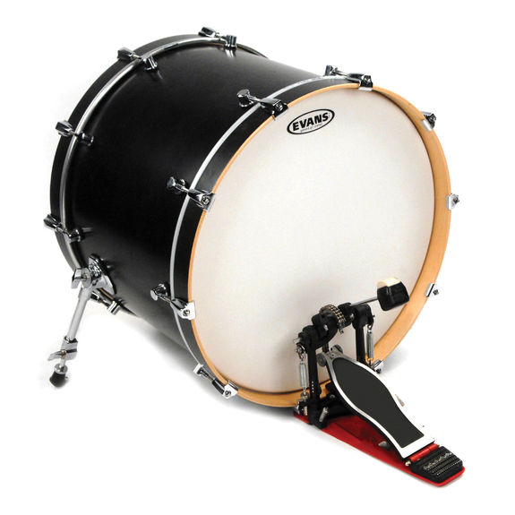The bass drum, coupled with the snare drum, provides the backbone of the music. It's the element that really drives the music forward. In most rock and pop music, you will hear the bass drum on the first and third beats in 4/4 tempo songs.
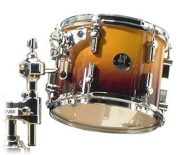A tom tom provides filling to the music. Whereas the snare drum provides crisp, sharp, and pitchless sounds, a tom tom produces a specific pitch without the snare-like sound. You can hear a tom tom in various parts of music to accent when a particular pitch is played by the band.
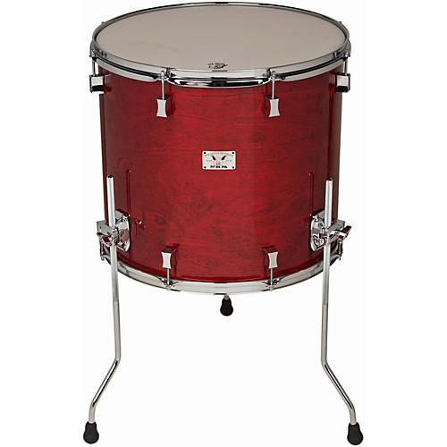A floor tom provides the same function as a tom tom but has a much lower pitch.
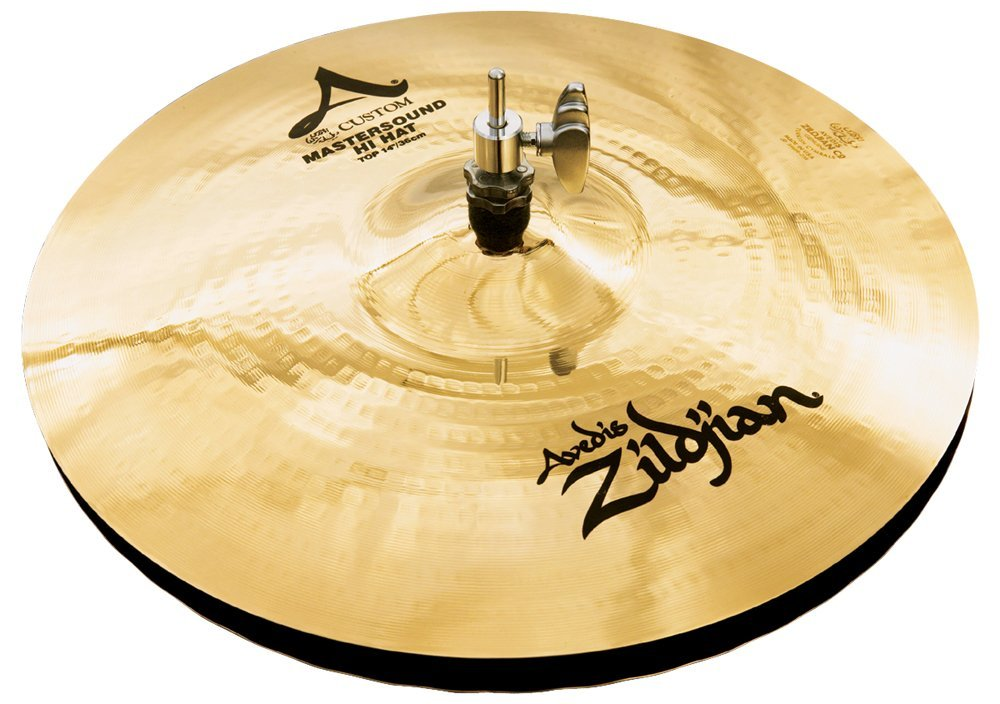The hi hat goes next to the snare drum in a typical drum set set-up. It can open and close with the pressing and releasing of a pedal controlled by a drummer's left foot if the drummer is right handed. Otherwise, the hi hat will be on the right side of the drummer. It makes a chick sound when closed and a washy, metallic sound when open.
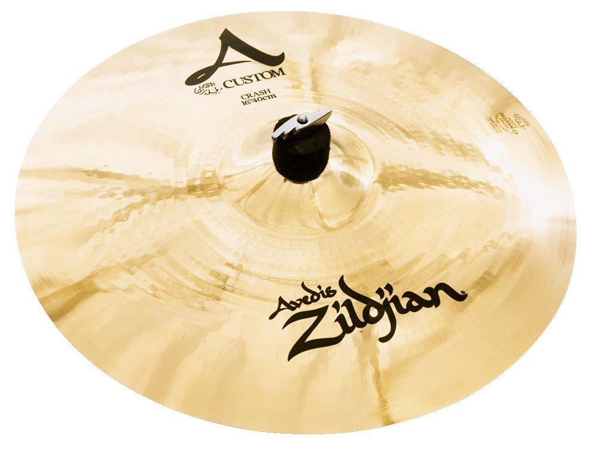A crash cymbal makes a loud and smooth, metallic sound. It's often used to signify the beginning of a new measure or accent a loud part of the music, perhaps a moment when the whole band plays a note together.
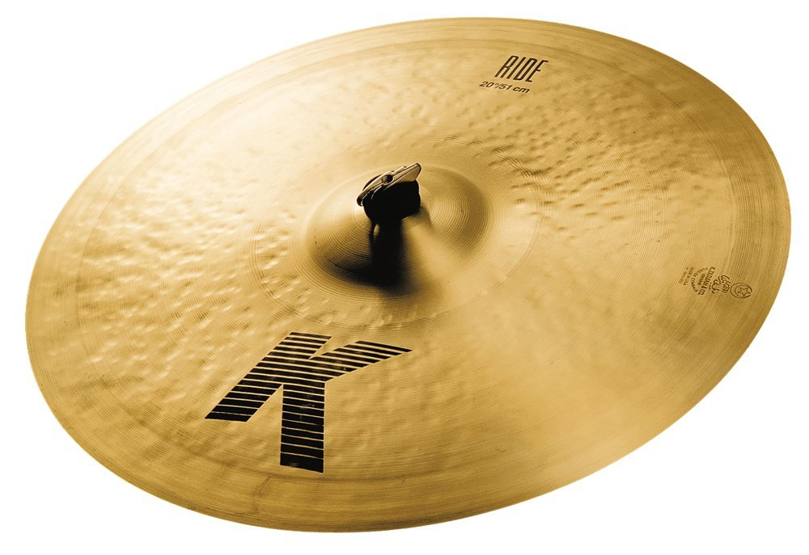A ride cymbal serves a similar function as a hi hat. The main difference is the amount of resonance and sound it makes. A ride cymbal makes a deeper and richer metallic sound which can add a smoothness to the music.
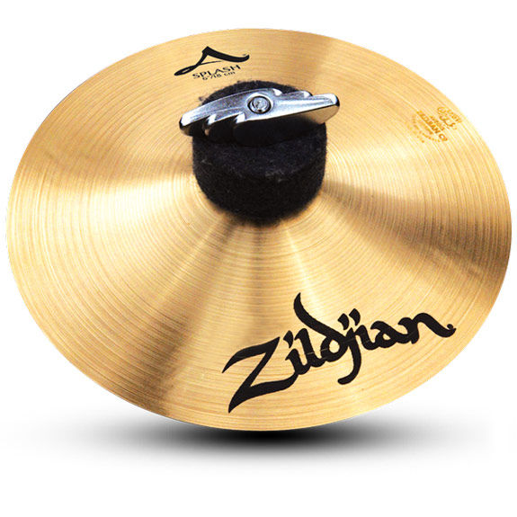A splash cymbal is a type of cymbal called an "effects" cymbal. A splash cymbal makes a very high pictched sound compared to other cymbals and it is most often used for special effects.
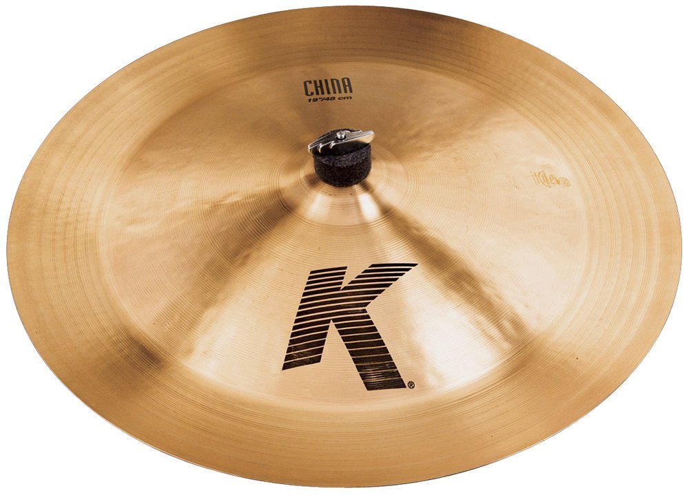A china cymbal is another "effects" cymbal. However, instead of its main use being for periodic effects, a china cymbal can be used as a crash cymbal or in lieu of a hi hat or ride cymbal.
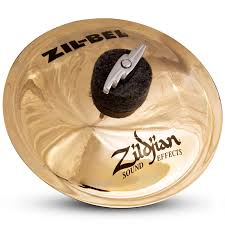A bell cymbal is another "effects" cymbal. It makes a sharp, pingy sound and is used to add special effects to the music.
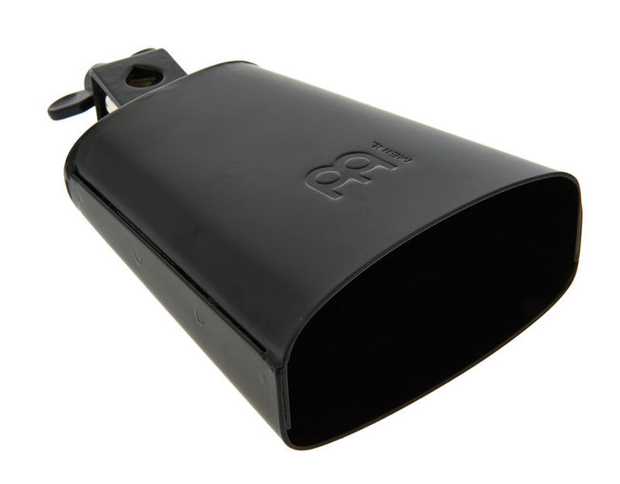A cowbell is an "auxiliary" instrument on a drum set. It can be used to add special effects to the music, or even be used in lieu of a hi hat or ride cymbal.
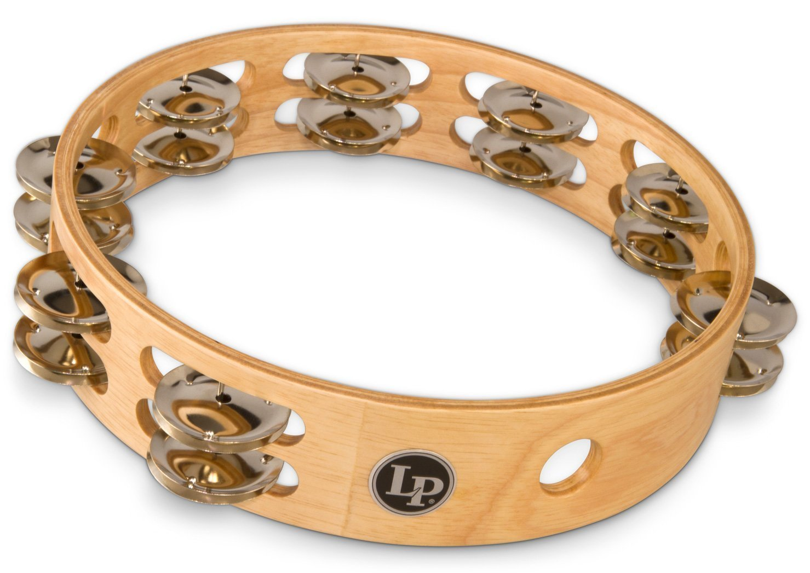A tambourine is another "auxiliary" instrument. In music it will sometimes be played by the singer. On a drum set it is typically placed on top of the hi hat. With this arrangement, the tambourine sound will be heard when the drummer closes the hi hat. The drummer may also hit the tambourine with a drum stick.
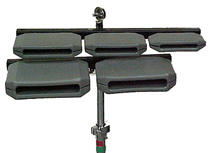Temple blocks are "auxiliary" instruments that are usually on a drummer's side if in a drum set ensemble. These can be used to accent parts of the music and are often used as a center focus in a drum solo.
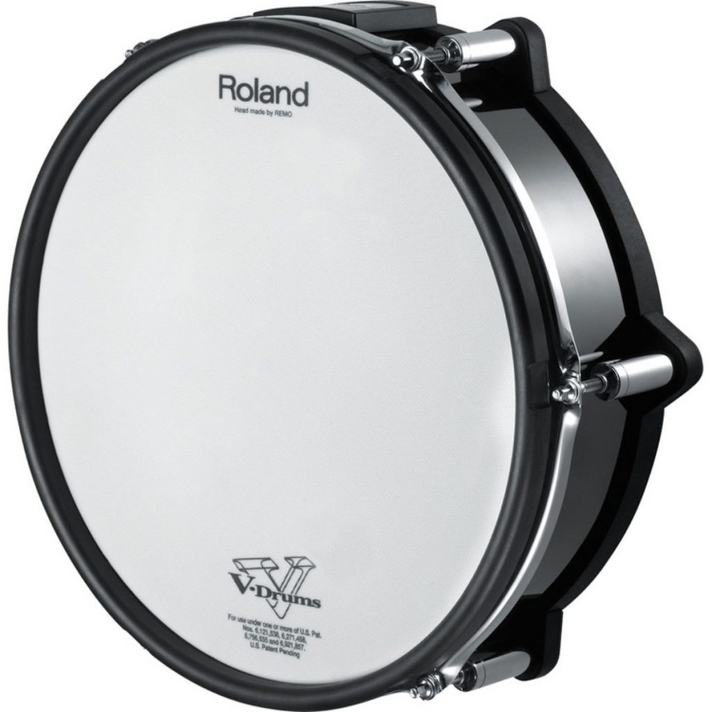An electric drum is a special effects instrument. It must be plugged into an amplifier to be heard when played. Depending on the drum "brain"--which is used to control the settings on electric drums--it can be tuned to many different sound effects, not exclusive to snare drum sounds.
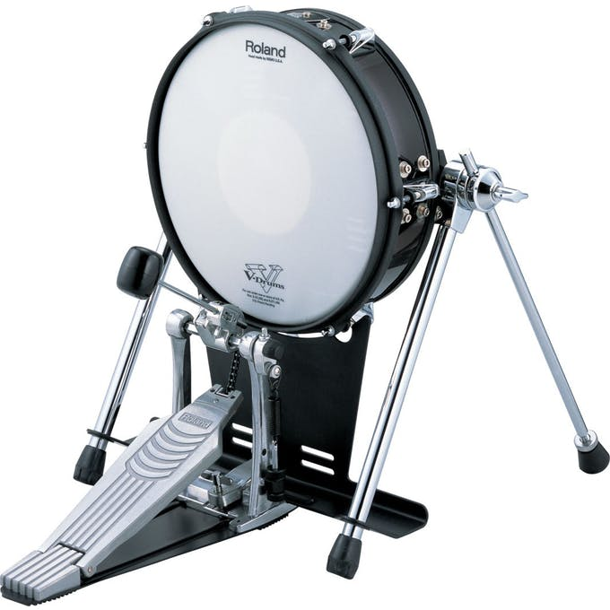An electric bass drum is a special effects instrument part of the electric drum family. It has the same capabilities as a typical electric drum, however the drum brain will typically limit the sounds it can produce to variations of a bass drum.